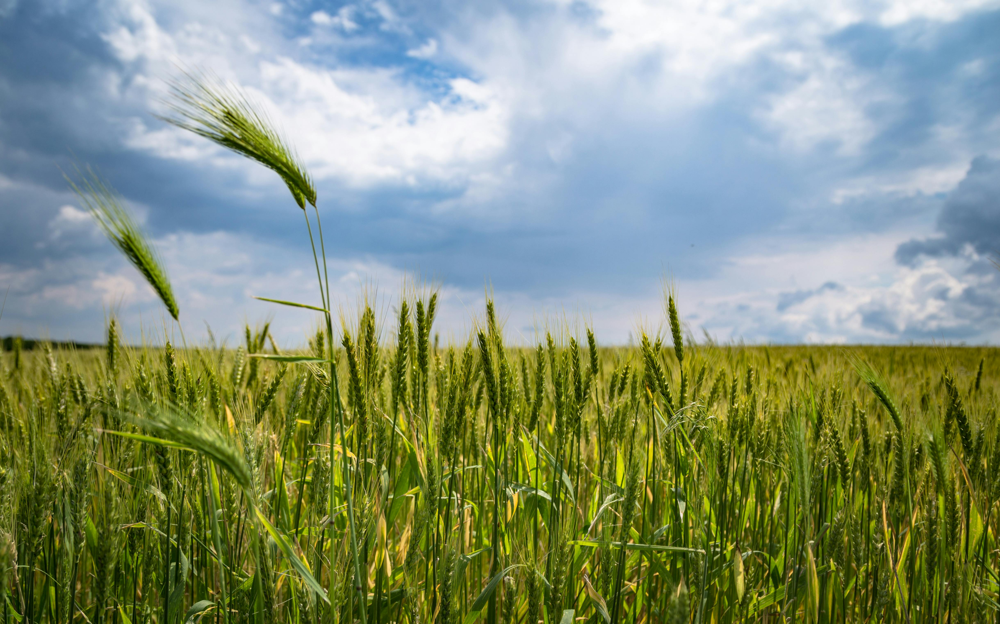
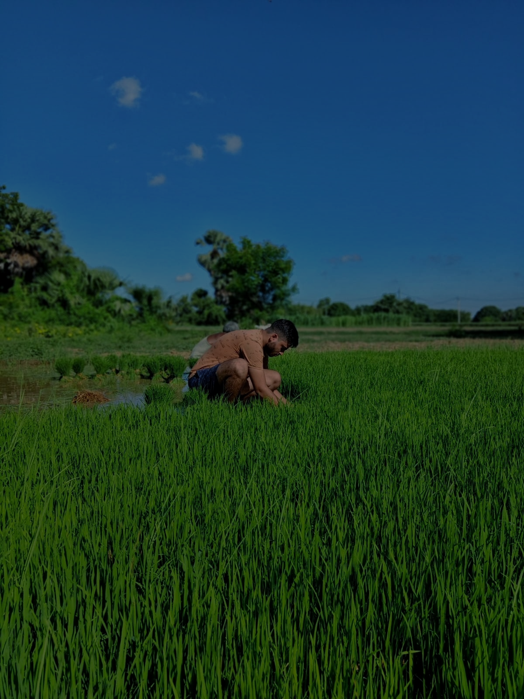

Your field, better informed
Grow with confidence.
Farm with insight.
A practical toolkit for choosing the right crop, reading the weather, protecting your plants, and planning your next harvest.
Smarter choices
from soil to harvest
from soil to harvest
One place for your next decision
Useful answers for
real farm days.
GreenShield brings essential farming guidance together in one simple place. Start with what your field needs today, then move from insight to action in a few clicks.
05focused tools
24/7weather access
01clearer workflow
Your farming toolkit
Choose your next
best move.
From planning to plant care, start with the tool that matches what is happening in your field right now.
01 / PLANFind the right cropGet a recommendation based on your soil and climate.Open crop planner

02 / CHECKToday’s weatherSee the conditions before you step into the field.View forecast 03 / PROTECTIdentify plant diseaseUse image analysis to spot problems early.Check a plant
04 / NOURISHGet fertilizer adviceChoose inputs that support healthier growth.Get recommendation 05 / LEARNFollow the smart guideSimple steps for planting, care, and harvest.Open guideA better season starts here